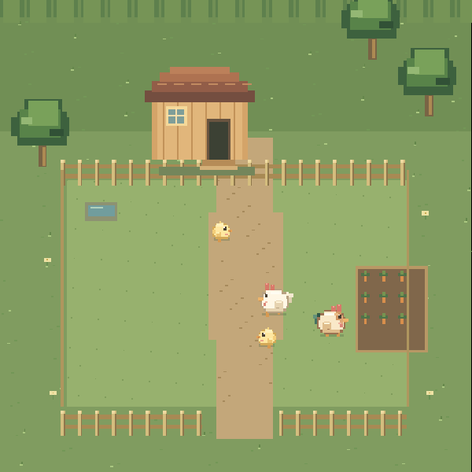
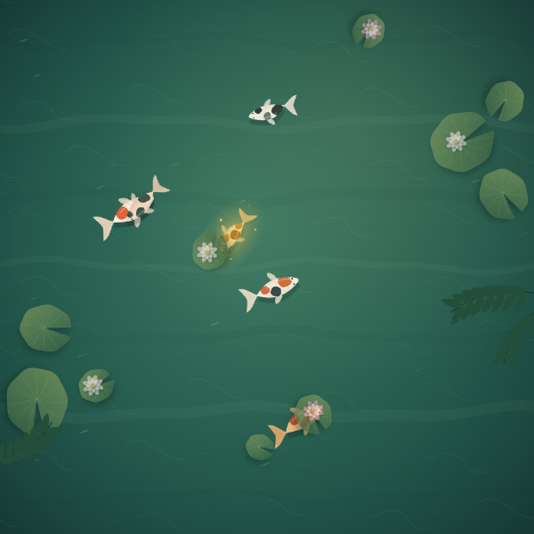

04 / ROOM FOR SOMETHING NEW
A new world is taking root.
INCOMINGSomewhere new
ON THE HORIZONA little space for what comes next.
MAKE YOURSELF AT HOME
Choose a little world. Settle in. Let the rest wait.
A CHANGE OF PACE

Turn a few seeds into a chance at a new friend for your worlds.
 01 / CARROTS & LITTLE MISCHIEFEnter meadow
01 / CARROTS & LITTLE MISCHIEFEnter meadow Hungry little visitors, patient guards, and rivers to roam.

02 / FEATHERS & SUNSHINEEnter farmLittle peeps, warm eggs, and room to grow.

03 / WATER & WONDEREnter pondSoft rain, drifting lilies, and a few familiar fins.
A little space for what comes next.
Your worlds are saved in this browser. Come back whenever.